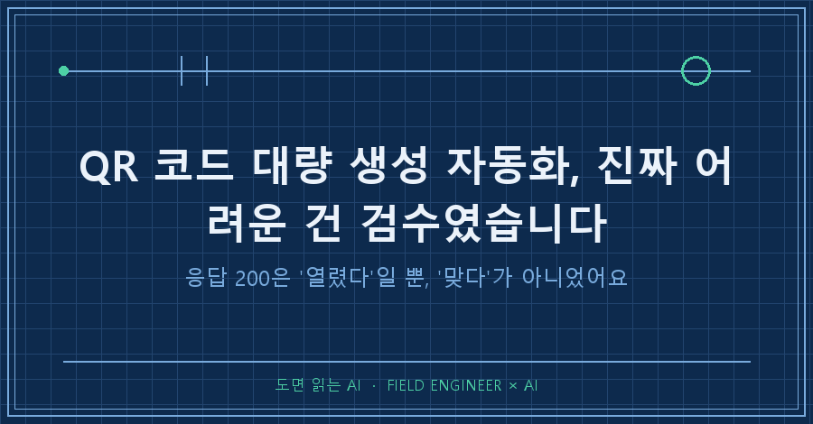
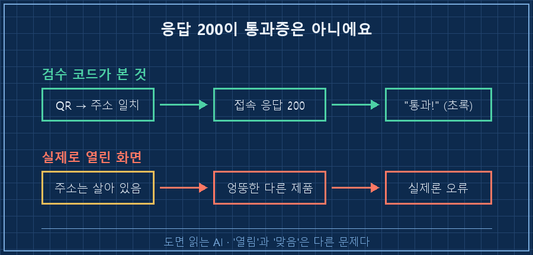
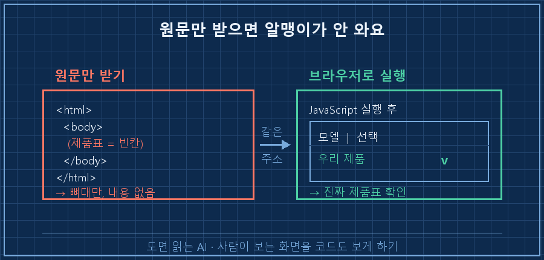
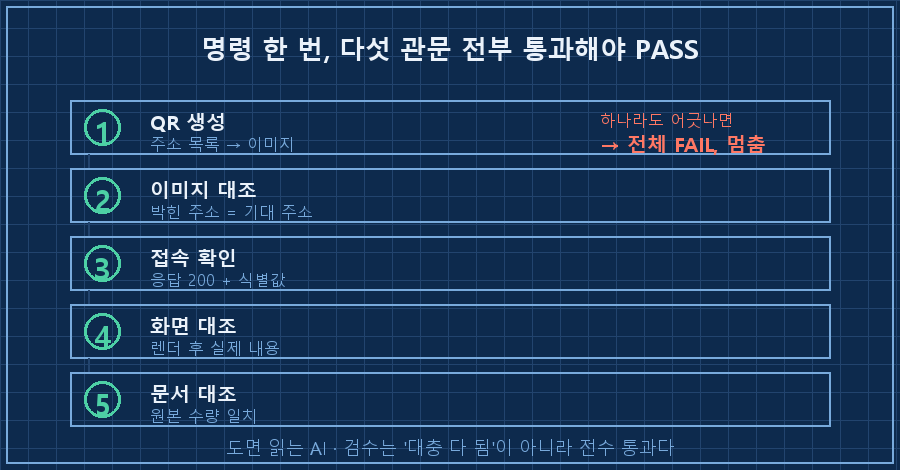

QR 코드 스무 개를 만들어 달라는 연락을 받았어요.
QR 만드는 거야 금방이죠. 문제는 그다음이었어요.
이게 전부 제대로 된 주소로 연결되는지, 스무 개를 어떻게 다 확인하냐는 거요.
그날 배운 걸 한 줄로 요약하면 이래요.
QR 코드 대량 생성에서 진짜 일은 '만들기'가 아니라 '검수'입니다.
그리고 그 검수를 대충 자동화했다가, 저는 하마터면 멀쩡히 속을 뻔했어요.
저는 제조 현장에서 자동화랑 제어를 15년 해온 엔지니어예요.
회로 보고, 제어 로직 짜고, 현장 뛰는 게 본업인데요.
요즘은 그 사이사이 끼는 반복 잡무를 AI한테 떠넘기는 습관이 생겼어요.
이번 QR 건도 딱 그런 잡무였고, 그러다 검수에서 한 방 먹은 이야기입니다.
1. QR 만드는 건 5분이면 끝나요
먼저 김 빼는 얘기부터 할게요.
QR 코드를 수십 개 만드는 건 정말 쉬워요.
파이썬에 qrcode라는 라이브러리가 있는데, 주소 목록만 넣으면 이미지 파일을 줄줄이 뽑아줘요.
제 경우엔 제품마다 붙는 정보 페이지 주소가 달랐어요.
용량이 다른 모델 4종에, 개수는 스무 개가 넘었고요.
그래도 목록을 표로 정리해서 넘기니까 QR 이미지 스무 장이 몇 분 만에 나왔습니다.
여기까지만 보면 "이거 왜 외주를 맡기지?" 싶죠.
저도 처음엔 그랬어요.
근데 진짜 일은 만든 다음에 있었어요.
2. "스무 개가 다 맞나"를 어떻게 확인하죠
만들었으면 확인을 해야 하잖아요.
QR 하나가 엉뚱한 주소로 연결되면, 그건 제품에 붙어서 고객 손까지 가는 사고예요.
불량 하나가 현장까지 나가는 걸 15년간 봐온 사람 입장에선, 검수 안 하고 넘기는 게 제일 무서워요.
그럼 방법이 뭐가 있냐면요.
폰 카메라로 QR 스무 개를 하나하나 찍어서, 뜨는 화면을 눈으로 대조하는 거예요.
스무 개면 그나마 버티는데, 이런 주문이 반복돼서 그동안 만든 게 100개를 넘었거든요.
100개를 매번 손으로 찍고 있으면, 자동화를 한 의미가 없죠.
그래서 검수도 코드로 짰어요.
처음 짠 검수는 두 단계였어요.
하나, QR 이미지를 프로그램으로 다시 읽어서 원하는 주소가 박혔는지 대조.
둘, 그 주소로 접속 요청을 보내서 응답 코드가 200(정상)인지 확인.
스무 개 전부 초록불이 떴어요. 다 통과.
저는 "끝났다" 하고 넘길 뻔했습니다.
3. 하마터면 속을 뻔했어요
찜찜해서 페이지를 하나만 직접 열어봤어요.
그런데 제 검수 코드가 "정상"이라고 한 그 주소에, 엉뚱한 다른 제품 사진이 대표로 떠 있는 거예요.
주소는 살아 있고, 응답도 200이고, QR도 그 주소가 맞아요.
그런데 열린 내용은 제가 의도한 제품이 아니었어요.

원인을 파보니 요즘 웹페이지의 함정이 있었어요.
제 검수 코드는 주소로 받아온 HTML 원문만 봤거든요.
그런데 요즘 페이지들은 접속 순간엔 뼈대만 오고, 제품 정보 같은 알맹이는 그다음에 자바스크립트가 그려요.
그러니 원문만 받아본 제 코드 눈엔 정작 중요한 제품표가 통째로 안 보였던 거예요.
"열린다"는 확인했는데 "열린 게 맞다"는 확인을 못 한 거죠.
이게 딱 제가 예전에 자동화에서 데인 것과 똑같은 함정이었어요.
프로세스가 돌았다는 것과 일이 됐다는 건 다른 얘기잖아요.
QR에서도 응답 200은 "주소가 살아 있다"는 알리바이일 뿐, "내용이 맞다"는 증거가 아니었던 거예요.
4. 브라우저를 진짜로 띄워야 진짜 내용이 보여요
해결은 결국 "사람이 보는 것과 똑같이 보게 하기"였어요.
원문만 받지 말고, 브라우저를 실제로 띄워서 자바스크립트까지 다 실행시킨 뒤의 화면을 보는 거예요.
크롬을 창 없이 돌리는 헤드리스 모드로 이걸 했어요.

chrome --headless --dump-dom "제품정보_주소" > page.html
# 렌더 끝난 뒤의 진짜 화면(DOM)을 파일로 받아 대조여기서도 한 번 더 걸렸어요.
요즘 크롬은 헤드리스 방식이 두 가지인데, 최신 방식으로 하니까 이 명령이 빈 파일만 뱉더라고요.
구버전 방식으로 바꾸니까 그제야 렌더가 끝난 진짜 화면이 나왔어요.
그 화면에서 제품표의 선택된 행을 읽어서, 주소가 가리키는 모델과 실제 표시된 모델이 같은지 대조했습니다.
이번엔 4종 전부 정확히 맞았어요.
한 가지 더. 크롬이 작업 폴더에 증거 화면을 저장하려다 권한 오류로 막히길래, 임시 폴더에 찍고 복사하는 걸로 우회했어요.
자동화는 늘 이런 자잘한 데서 발목이 잡히더라고요.
5. 원샷으로 박제했어요
여기까지 오니 아까웠어요.
이 고생을 이번 한 번만 쓰고 버리면, 다음 주문 때 또 처음부터잖아요.
그래서 명령 한 번이면 끝까지 도는 파이프라인으로 묶었어요.

명령 하나 치면 이렇게 리포트가 떨어져요. (아래는 결과 화면을 알아보기 쉽게 재구성한 예시예요.)
[1/5] QR 생성 ........... 스무 개+ 생성
[2/5] 이미지 주소 대조 ... 전부 일치
[3/5] 접속 응답 + 식별값 . 그룹별 반영 확인
[4/5] 실제 화면 대조 ..... 모델 4종 일치
[5/5] 원본 문서 대조 ..... 수량 일치
RESULT: PASS핵심은 마지막 한 줄이에요.
하나라도 어긋나면 전체를 실패로 처리하고 멈춰요.
"대충 다 된 것 같다"가 아니라, 다섯 관문을 전부 통과해야만 통과로 찍히는 구조요.
그리고 브라우저로 확인한 화면은 증거로 자동 저장해둬서, 나중에 "이거 확인한 거 맞냐" 소리를 들어도 바로 꺼내 보여줄 수 있어요.
자주 묻는 것들
Q. QR 코드 대량 생성은 뭘로 하나요?
파이썬 qrcode 라이브러리면 충분해요. 주소 목록을 표로 정리해서 넘기면 이미지가 줄줄이 나와요. 진짜 어려운 건 만드는 게 아니라 검수라, 여기에 시간 쓰지 마세요.
Q. QR이 제대로 연결되는지 자동으로 확인할 수 있나요?
두 겹으로 하세요. 먼저 QR 이미지를 프로그램으로 다시 읽어 '원하는 주소가 박혔나'를 보고, 그다음 그 주소에 접속해 '살아 있나'를 봅니다. 단 이건 "열린다"까지만 증명해요.
Q. 그럼 "내용이 맞다"는 어떻게 확인하죠?
브라우저를 실제로 띄워 자바스크립트까지 실행한 화면을 봐야 해요. 요즘 페이지는 접속 직후 원문엔 알맹이가 없고 나중에 그려지거든요. 원문만 받아 검수하면 엉뚱한 내용을 정상으로 착각할 수 있어요.
정리하면
QR 코드 대량 생성 자체는 5분짜리 잡무예요.
승부는 검수에서 나요.
그리고 그 검수는 "주소가 열리나"가 아니라 "열린 내용이 맞나"까지 봐야 진짜 검수예요.
접속 응답 200은 통과증이 아니라 그냥 문이 열렸다는 신호일 뿐이거든요.
혹시 지금 반복되는 외주나 잡무를 손으로 붙들고 계시면, 만드는 부분 말고 검수하는 부분을 먼저 자동화해보세요.
거기서 시간이 제일 많이 새고, 사고도 거기서 나니까요.
저처럼 자잘한 외주를 자동화하며 남긴 스크립트와 삽질 메모는 makefield.ai에 하나씩 모아두는 중이에요.
---
현장 엔지니어를 위한 AI 도입·자동화 문의: makefield.ai